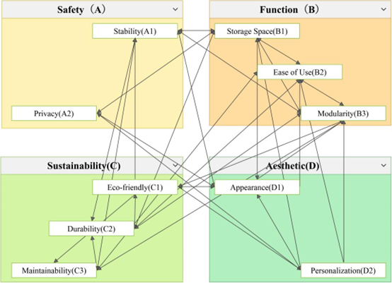

用户研究 · 人机工效学 · 数据驱动设计
南昌大学 建筑与设计学院
从需求调研到设计评估的完整研究闭环。发表于 BioResources。

本研究采用ANP（网络分析法）建立三层评价结构：目标层（宿舍木质家具设计）→ 6 个准则 → 18 个子指标 → 3 个候选方案。与传统 AHP 不同，ANP 揭示了准则层之间的交叉依赖关系。
其中模块化（C6）是整个网络的枢纽节点——它向下衍生出自由组合、功能模块化、可扩展性三个子指标，横向与安全性（结构稳定性）、舒适性（人机合理性）、储物空间（空间效率）、私密性（隔断设置）四个准则存在双向反馈。这意味着模块化设计的决策会传导至整个指标体系，是设计方案排序的关键杠杆点。
基于 ANP 确定的指标权重与设计方案评分，雷达图直观对比三个设计候选方案在六个核心指标上的表现差异。方案 C 在舒适与美观维度突出但储物效率偏弱，方案 A 均衡但无突出优势——这种"可视化取舍"为最终设计决策提供了直观依据。
ANP 超级矩阵揭示：模块化（C6）以其最高的中间中心度成为网络的结构性枢纽——它并非权重最高的准则（安全 C1 权重最高），但所有准则层的依赖箭头全部经过或发端于 C6。这意味着模块化是设计决策中最重要的杠杆点：一个模块化决策会沿网络路径传导至安全、储物、舒适、私密、美观五个维度。
ANP 准则层之间存在六条主要依赖路径，共同构成设计决策的传导网络。
模块化通过结构稳定性传导至安全性。标准化接口的强度决定了任意组合方式下的整体结构可靠度，这是所有其他维度的物理前提。
模块化通过空间效率传导至储物空间，再进一步影响使用舒适性。灵活的模块组合方式是有限宿舍空间下提升功能密度的关键路径。
模块化通过隔断设置传导至私密性，再作用于心理层面的舒适感知。可移动隔断模块提供了在不改动建筑结构下实现个人空间的可能。
安全性（结构稳定性 C11）与储物空间（空间效率 C31）之间存在双向反馈——增加储物密度可能削弱结构完整性，反之保守的结构设计会压缩可用储物容积。
人机工程学合理性（C21）与外观配色（C41）、风格统一（C42）之间存在双向协同——符合人体尺度的设计天然具有秩序美感，而视觉上的和谐会提升使用时的感知舒适。
模块化通过自由组合（C61）和可扩展性（C63）传导至美观性。用户自主排列组合模块单元，在标准化体系中实现个性化视觉表达。
基于六条链式关系的分析，提出四条系统性的设计策略。
基于链 1/2/3/6 的共同起点——模块化是所有依赖路径的起点。将家具系统首先分解为标准化的床体、储物、书桌、隔断四个功能模块族，定义统一的物理接口（连接件规格、载荷传递路径、尺寸模数），再在各模块族内部进行深化设计。此策略确保后续所有维度的优化都建立在可重组的模块基座上。
针对链 4 的 C1↔C3 双向制约，采用参数化协同设计：储物模块的壁厚、跨距、连接点数作为结构变量输入，安全模块的载荷标准、材料许用应力作为约束条件，在两者交集中搜索满足结构安全前提下的最大储物容积配置。避免先设计储物再校核安全的串行返工。
基于链 2（C6→C3→C2）和链 3（C6→C5→C2）的汇聚效应——两条路径的终端都是舒适性。将模块化储物与模块化隔断作为提升用户体验的两个并行杠杆：储物模块提升功能效率型舒适，隔断模块提升心理型舒适。两者共享模块化接口标准，可混合配置。
基于链 6（C6→C61→C4）和链 5（C2↔C4）的协同效应——美观与舒适无需以整体更换为代价。可替换面板模块（配色/材质）、可增减的功能插件（附加抽屉/书架）使得用户入住后仍可持续调整家具配置。标准化模块接口确保新旧模块兼容，支撑从"一次性交付"到"持续进化"的设计范式转换。
100 名受试者 · 190 有效样本 · RF 代理模型 · NSGA-II 优化 · JACK 仿真验证
我们发现了一个关键现象：生物力学上最优的座椅配置，往往不是用户主观感知最舒适的。这种"舒适-风险错配"意味着只追求客观指标的设计，可能忽视用户的真实体验。
设计参数存在功能性分工——全局结构参数（座高、靠背角度）主导客观风险，局部支撑参数（头枕、扶手）主导主观舒适。由此提出可迁移的设计策略：先定全局结构保安全，再调局部支撑优体验。
随机森林特征重要性分析揭示了清晰的参数角色分工。右侧图表展示了各设计参数对风险预测和舒适预测的相对贡献——同一组参数，在不同目标上表现出截然不同的重要性排序，这是"舒适-风险错配"的量化证据，也是差异化设计策略的数据基础。
将 NSGA-II 优化得到的座椅参数配置输入 JACK 数字人仿真平台，与数据集中实际样本均值进行对比。三个关键生物力学指标均呈现一致性改善，独立验证了代理模型优化结果的可信度。
从自身研究痛点出发，将 40 分钟手工检索
重构为 40 秒自动化研究系统。
作为研究者，我每天花 40-60 分钟在多个学术数据库间切换、翻译关键词、逐篇筛选论文、手动提炼要点——这个过程重复且低效。
所以我为自己造了一个工具。三个 AI Agent 各司其职，通过结构化数据协作，把整个流程自动化。
每个 Agent 只做一件事。Agent 之间传 JSON 而非自然语言——避免理解偏差和错误累积。单 Agent 要求"翻译+筛选+提炼"时输出不稳定，拆分后两次运行判断一致。这是从用户（我自己）真实痛点出发，迭代出来的架构决策。
需求调研、问卷设计、Kano 分析、主观评分量表、人因实验设计、RULA 姿态评估、用户访谈
受控人因实验（100+ 被试）、MATLAB 数据处理、Random Forest、交叉验证、NSGA-II 优化、JACK 数字人仿真
LLM Agent 架构、Prompt Engineering、RAG 系统、向量数据库、Python、Claude Code 辅助开发
SCI 论文撰写与投稿、文献系统综述、研究框架设计、学术图表与可视化、中英双语写作
以用户为中心的设计、约束决策建模、Comfort-Satisficing 策略、设计参数-人因映射分析
MATLAB、Python、JACK Siemens、Claude Code、Dify、Git、ChromaDB、SearXNG、SiliconFlow API